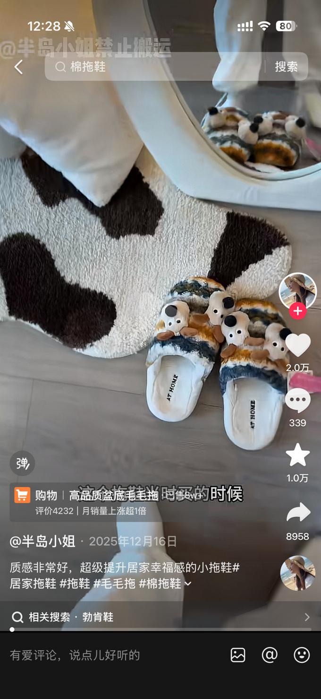
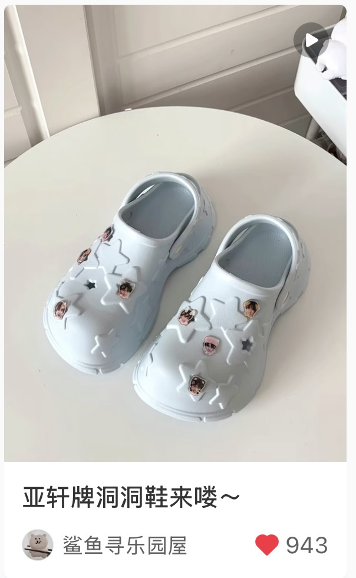
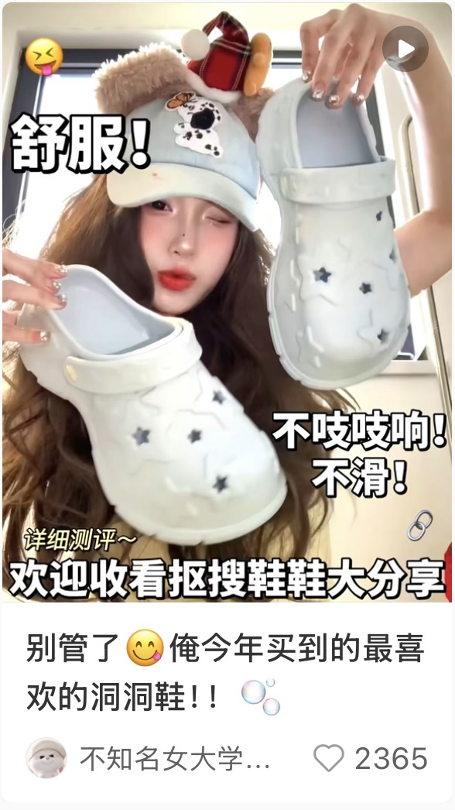

抖音 / 达人筛选与追投
找家居服达人拍棉拖，发布次日追加投放

- 为什么选她
- 【半岛小姐】主要分享家居服，和棉拖的目标受众及客单价接近，居家场景也能自然展示上脚效果。
- 发布后怎么判断
- 次日看到点击和转化表现较好，我追加了投放。
- 合作怎么延续
- 联系达人沿用同一场景和拍摄角度，继续拍摄同款。另一个同款合作是「雅慧姐姐」。
CREATOR COLLABS
从筛选达人到看数据、跟进拍摄，怎么判断一条内容值得继续做。
SHEGOTO / 小红书达人种草
找追星博主展示开箱和鞋花搭配，让用户看到鞋子的玩法。
DIY 笔记下有人问鞋花从哪买，也有人问穿久了的体验。口播笔记下，读者继续追问夏天穿着和购买链接。
评论里已经有人关心怎么穿、在哪里买。我在后续推广中增加了口播类博主，让内容有空间讲清上脚体验。

